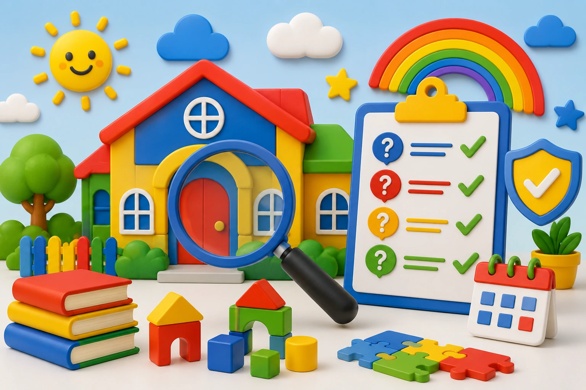

Questions to Ask When Visiting a Daycare
Visiting a daycare before enrolling your child is an important opportunity to observe the environment, meet the staff, and get answers to your questions. Asking the right questions can help you make a more informed and confident decision.

1. Is the Program Licensed?
Confirming that the daycare is licensed helps ensure that it meets established requirements for safety, supervision, and quality childcare.
2. What Is the Daily Routine for Children?
Ask how the day is structured, including meal times, naps, playtime, learning activities, outdoor play, and transition periods.
3. How Do You Communicate with Parents?
It is important to know whether you will receive daily reports, messages, photos, updates, or direct communication about your child's progress and well-being.
4. What Safety Measures Are in Place?
Ask about check-in and check-out procedures, emergency protocols, authorized pickup individuals, and how medical situations are handled.
5. What Types of Educational Activities Do You Offer?
A quality daycare combines play and learning. Ask about reading, art, music, motor development, sensory activities, and opportunities for socialization.
6. How Do You Help New Children Adjust?
The transition can be emotional for both children and parents. It is helpful to understand how the program supports families during the first few days and weeks.
7. Do You Accept Assistance Programs Such as Care 4 Kids?
If your family may qualify for financial assistance, ask whether the daycare accepts programs such as Care 4 Kids and whether they can guide you through the application process.
8. What Makes This Daycare Different?
This question helps you better understand the program's philosophy, strengths, environment, and the way they support children's growth and development.
Final Thoughts
A daycare visit should leave you feeling confident and reassured. Observe how you are welcomed, how caregivers interact with children, and whether the environment reflects trust, organization, warmth, and professionalism.
Would You Like to Visit Koinonia Fun Childcare?
At Koinonia Fun Childcare, we are happy to answer your questions, show you our environment, and help you determine whether we are the right fit for your family.